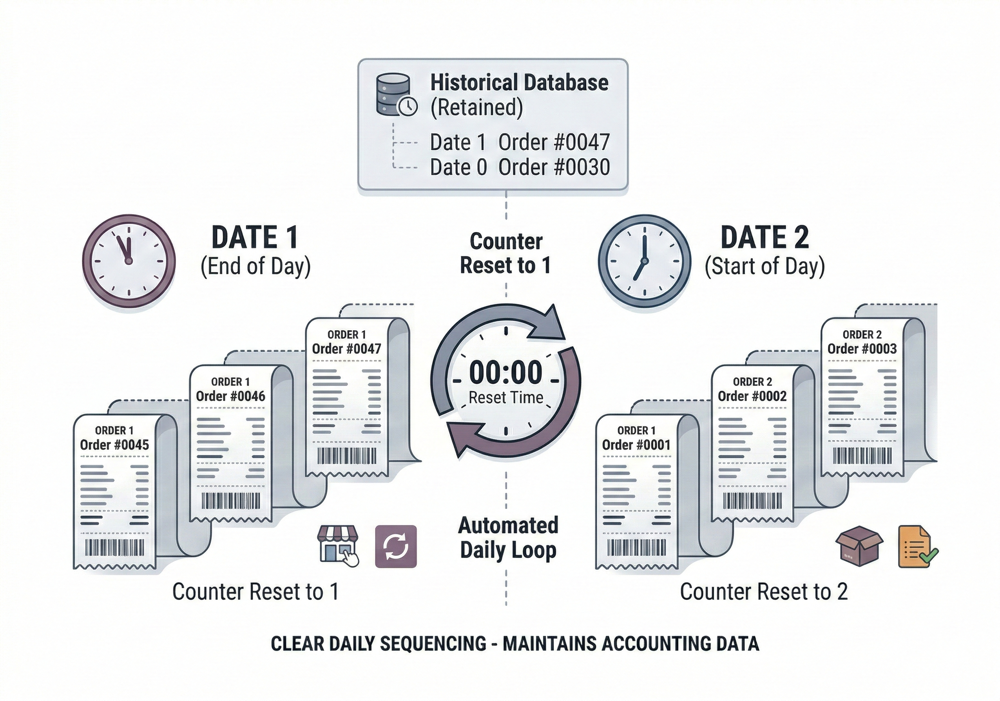
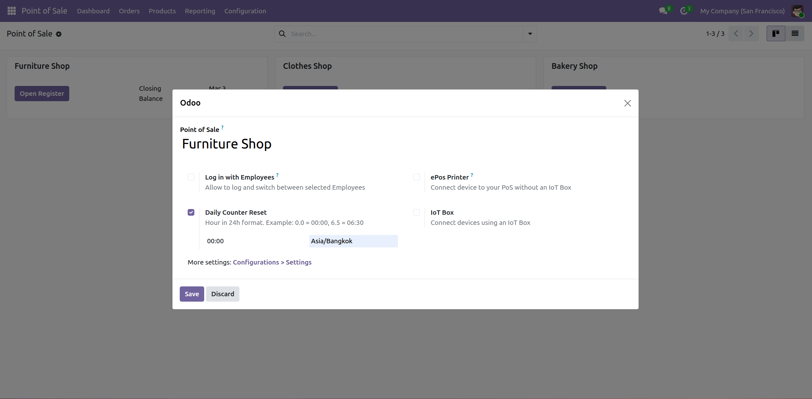
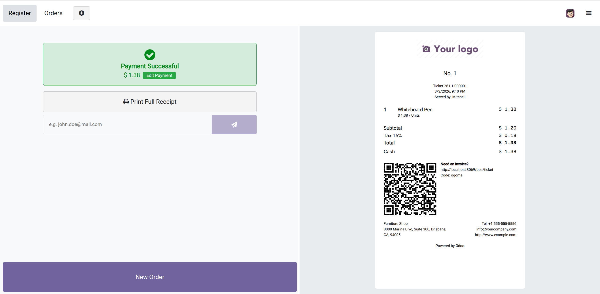

Automatically reset POS order numbering every day for Odoo 19.
Ideal for retail & restaurants that close and reconcile sales daily (Z-reports).

Cover image
By default, Odoo uses a continuous sequence for POS orders. This add-on introduces a daily counter that starts again from 1 after a configurable reset time, without changing standard POS workflows.
| Date | Order Number |
|---|---|
| 2025-03-01 | 0001 |
| 2025-03-01 | 0002 |
| 2025-03-02 | 0001 |
| 2025-03-02 | 0002 |
Each reset period starts again from 1.
The system will automatically handle numbering based on your configuration.
Add real screenshots to increase your app score & conversion rate.

POS configuration

Daily order number in receipt / order
Need help with installation or configuration? Please contact the author via the Odoo Apps support channel.